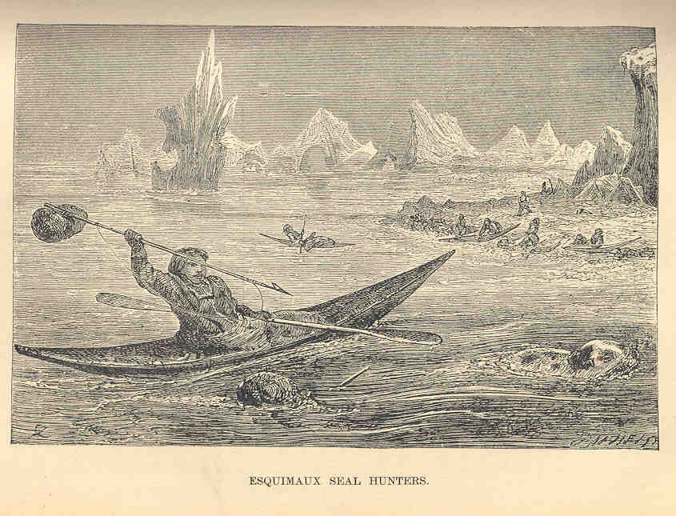
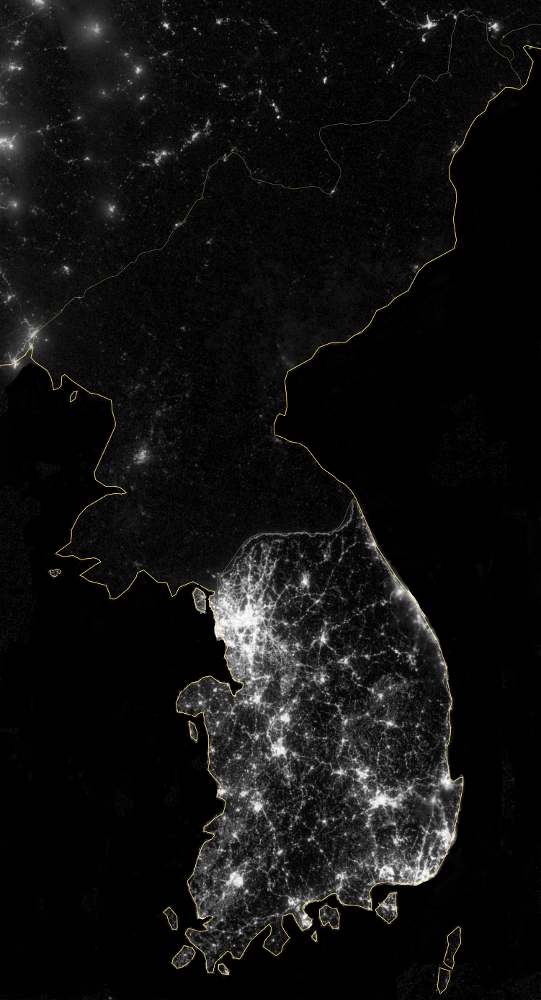
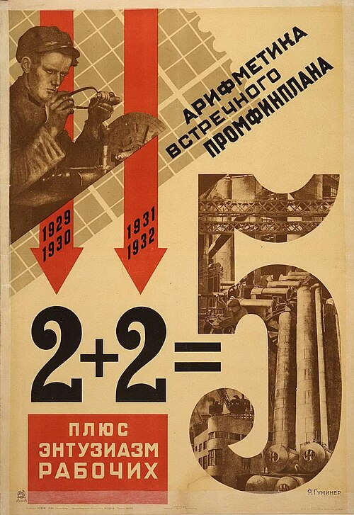

1.3 Factors of Production: Who Decides WHAT, HOW, and FOR WHOM?
- Every good or service requires four factors of production: land (natural resources), capital (tools and machinery), labor (human effort), and entrepreneurs (risk-takers who combine them).
- Every society must answer three questions: WHAT to produce, HOW to produce it, and FOR WHOM it gets produced.
- A traditional economy answers through custom and habit. Roles are clear, but innovation is suppressed and growth stalls.
- A command economy answers through a central authority. Resources can be mobilized fast, but incentives collapse and quality suffers (see: Soviet chandeliers).
- A market economy answers through free exchange and dollar votes. Individual freedom and variety are high, but not everyone is provided for.
- Most real economies are mixed - blends of all three systems sitting somewhere on a spectrum from pure command to pure market.
Tap a term for its definition.
-
Definition: The productive resources needed to produce goods and services: land, capital, labor, and entrepreneurs.
-
Definition: Natural resources not created by human effort - farmland, forests, minerals, fresh water, sunlight; one of the four factors of production.
-
Definition: Tools, equipment, machinery, and factories used in the production of goods and services; NOT the same as money.
-
Definition: All human effort - physical and mental - that goes into producing goods and services; one of the four factors of production.
-
Definition: Risk-taking individuals who combine the other three factors to start businesses or bring new products to market.
-
Definition: The organized way a society uses its scarce resources to answer WHAT, HOW, and FOR WHOM to produce.
-
Definition: An economy in which production decisions are based on ritual, habit, and custom passed down through generations.
-
Definition: An economy in which a central authority - such as a government or dictator - makes the major decisions about production and distribution.
-
Definition: An economic and political system in which the government owns some but not all of the factors of production.
-
Definition: An economy in which the three basic questions are answered primarily by buyers and sellers interacting freely in markets.
-
Definition: An economic system in which private citizens own and use the factors of production in order to earn profit.
-
Definition: The right of individuals and businesses to operate competitively for profit with minimal government interference.
-
Definition: Assets owned by individuals or businesses rather than by the government; a key feature of market economies.
-
Definition: A trade in which both the buyer and the seller freely agree to the transaction, each believing they benefit.
-
Definition: The idea that consumer spending decisions signal to producers what goods and services people want most.
-
Definition: An economy that combines elements of traditional, command, and market systems; describes virtually every real-world economy.
-
Definition: A prolonged period of little or no economic growth, often associated with traditional or poorly managed command economies.
Every economy runs on resources. Before examining how different societies organize those resources, it helps to know what they are. Economists call the productive resources needed to make any good or service the factors of production. There are exactly four, and every good or service ever made required all of them.
The Four Factors of Production
Land
In economics, land means all natural resources - not just dirt, but everything nature provides that human effort did not create: farmland, forests, mineral deposits, fresh water, sunlight, wind, and ocean fisheries. Land is in fixed supply at any given moment. No factory manufactures new oil fields or creates new rivers. When a critical natural resource becomes scarce, think lithium for electric vehicle batteries or fresh water in arid regions, prices rise and every industry that depends on it feels the strain.
Capital
Capital (also called capital goods) is the tools, equipment, machinery, and factories used to produce other goods and services. A conveyor belt, a surgical robot, a server farm, a tractor, the computers in a school - all are capital goods. Capital is unique: it is itself the product of earlier production. Someone had to build the factory before the factory could make anything. One important note: capital in economics is not money. Money is a medium of exchange. Capital is the physical equipment bought with money in order to produce goods and services.
Labor
Labor is all human effort - physical and mental - that goes into producing goods and services. The cashier, the surgeon, the programmer, and the teacher are all labor. Both the quantity of workers (how many are available) and the quality of their skills (how well trained and educated they are) matter enormously. A country with a large, educated, healthy workforce has a productive advantage that no amount of land or capital alone can replace.
Entrepreneurs
Entrepreneurs are a distinct fourth factor: risk-takers who start businesses, introduce new products, and - most importantly - combine the other three factors in new ways. They are not simply workers; they organize and personally absorb the risk of failure. Henry Ford did not invent the car, but in 1913 he introduced the moving assembly line that cut production time from 12 hours to 93 minutes per vehicle, putting car ownership within reach of ordinary families. That kind of recombination - existing factors, new arrangement, transformative result - is what entrepreneurs do.
Who owns these factors shapes the entire character of an economy. The rest of this section examines three different answers to that question.
The Framework - Three Questions Every Economy Must Answer
Because resources are limited, every society is forced to make choices. Economists group those choices into three questions.
- WHAT to produce? Should society use its resources for military equipment or hospitals? Luxury condos or affordable housing? Not everything can be built, so a choice must be made.
- HOW to produce it? Should a factory use machines or workers? Should land be owned privately or by the state? Should decisions be made by individual businesses or by central planners?
- FOR WHOM to produce? Once goods and services exist, who gets them - the highest bidder, everyone equally, or whoever the government selects?
An economic system is the organized way a society uses its resources to answer these three questions. Economists sort economic systems into three main types: traditional, command, and market. No real country is a pure version of just one type, but understanding each type separately makes the real world much easier to read.
Traditional Economies
The oldest type is the traditional economy: one in which WHAT, HOW, and FOR WHOM are determined by ritual, habit, and custom. People in a traditional economy are generally not free to make decisions based on what they personally want. Instead, their roles are defined by the customs of their elders and ancestors. If a child's family hunted, the child hunted. If a family farmed, the children farmed.
Case study: The Inuit of Northern Canada
For thousands of years, the Inuit people of the Arctic survived in one of the harshest environments on Earth - and they did it through a highly developed set of traditions. Inuit parents taught their children how to make tools, fish, and hunt. Those children taught the same skills to the next generation. The knowledge never had to be reinvented because tradition passed it forward automatically.
This tradition of sharing meant that as long as skilled hunters lived in the community, the entire village could survive a long Arctic winter.

Advantages and disadvantages
The main advantage of a traditional economy is clarity. Everyone knows their role, what to produce, and how to produce it. There is very little uncertainty, and the Inuit's survival across millennia is direct evidence of how stable a well-functioning traditional economy can be.
The main disadvantage is that traditional economies punish new ideas. If a young Inuit proposed a different hunting technique the elders had not approved, social pressure would push back hard. The same rules that kept the community alive for generations also kept it from adapting. Over time, this causes economic stagnation - little growth and a lower standard of living than societies that can innovate.
Command Economies
In a command economy, a central authority makes the major decisions about WHAT, HOW, and FOR WHOM to produce. That authority might be a king, a dictator, a political party, or a government planning agency. Private citizens do not direct the economy through their spending choices - the central planner does. Most command economies severely limit private property rights, meaning people cannot own their homes, businesses, or productive resources, though they may keep personal items like clothing.
Socialism
A modern variation is socialism: a system in which the government owns some but not all of the factors of production. Socialist governments typically say their goal is to serve the needs of all citizens, not just their leaders. Countries like Cuba and Vietnam are current examples; the Soviet Union was the most influential socialist state of the 20th century before it collapsed in 1991.
Advantages
Command economies can mobilize resources rapidly. A central authority can redirect enormous quantities of resources toward a single goal far faster than millions of separate market decisions can. (Section 1.4 examines both the Soviet Union's dramatic industrialization and what ultimately brought the system down.)
Command and socialist economies can also provide basic goods and services to all citizens regardless of income. Cuba offers universal health care. The Soviet Union provided education, housing, and transportation to everyone at little or no direct cost - though citizens paid indirectly through low wages and severely limited consumer options.
Disadvantages
The problems are serious and tend to compound over time. Leaders benefit at the expense of ordinary people - in North Korea, officials live comfortably while millions of citizens have faced food shortages for decades. Uniform wages destroy incentives: if a surgeon earns about the same as a factory worker, fewer people bother with years of medical school. Quality suffers when quotas replace customers (see the chandelier story). Bureaucracies are slow - when a harvest fails or oil prices spike, a command economy cannot adjust quickly because every decision must move through layers of central authority. And pure command economies tend to collapse when they grow large - it is manageable for one authority to run a village, but nearly impossible to run a modern nation-state.


Market Economies
In a market economy, the three basic questions are answered by buyers and sellers interacting freely. A market is any arrangement - a store, a website, a stock exchange, a street vendor - where buyers and sellers come together to agree on prices and quantities. Markets can exist online or in person; what makes them markets is the voluntary interaction.
Dollar votes, capitalism, and free enterprise
Here is how a market economy answers each question:
- WHAT to produce: Consumers signal what they want through their spending - sometimes called dollar votes. If millions of people buy electric vehicles, automakers see the signal and shift resources toward EVs. If nobody buys a product, producers stop making it. No government order is required.
- HOW to produce: Businesses are free to find the most efficient methods. A firm that figures this out grows and profits; one that doesn't is replaced by competitors.
- FOR WHOM to produce: Goods go to those who can and will pay for them. Income earned in the market determines purchasing power.
Market economies feature free enterprise: the right of individuals and businesses to operate competitively with minimal government interference. They also feature capitalism: private citizens own the factors of production and use them to earn profit. Private property rights are protected - you can own a home, a business, or shares of stock, and the government cannot take them without compensation. Every transaction is a voluntary exchange: both buyer and seller agree freely, and both believe they come out better because of the trade.
Advantages
Market economies offer individual freedom: people choose where to work and what to buy. They adjust gradually to change through prices alone — when gas prices spiked in 2005, American consumers shifted to fuel-efficient cars without any government order. They produce enormous variety: if there is profit to be made from a product, someone will make it. And privately owned goods tend to be better maintained - owners take better care of things than borrowers do.
Disadvantages
Market economies do not provide for everyone. People who are too young, too old, or too sick to earn income may struggle without family, charity, or government support. Markets also tend to underprovide goods that are hard to sell for profit - roads, basic scientific research, national defense, and universal education are the classic examples. Finally, there is always uncertainty: businesses can fail, jobs can move overseas, and prices can shift in ways that hurt workers with little warning.
Mixed Economies - The Real World
No country today runs on a pure traditional, pure command, or pure market system. Every real economy is a mixed economy that blends elements of all three. The question is not "market or command?" but "how much of each?" Real economies sit on a long spectrum, pure command on one end, pure market on the other, with every country positioned somewhere between those poles based on its history, culture, and political choices. Section 1.4 traces why so many countries moved toward the market end of that spectrum over the past century, and how different countries arrived at very different versions of capitalism.
- Every society answers three questions: WHAT, HOW, and FOR WHOM to produce. The type of economic system determines who answers them.
- A traditional economy answers through custom and habit - roles are clear, but innovation is suppressed and growth stalls.
- A command economy answers through central authority - resources can be mobilized quickly, but incentives collapse and quality suffers.
- A market economy answers through free exchange, dollar votes, and private ownership - individual freedom and variety are high, but not everyone is provided for.
- Real economies are mixed - blends of all three, sitting somewhere on a spectrum from pure command to pure market.
These videos will help you review Factors of Production: Who Decides WHAT, HOW, and FOR WHOM? and solidify key concepts before your exam.
- Consumers through their spending choices
- A central authority such as a government or dictator
- Tradition and the customs of ancestors
- Individual businesses competing for profit
- Command economies mobilize resources too slowly
- Workers earn too much compared to their effort
- Quotas cause workers to focus on the metric rather than producing quality goods
- Command economies cannot provide goods to low-income citizens
- A government production mandate
- Dollar votes directing resources in a market economy
- A traditional economy adapting to new customs
- Central planning adjusting to scarcity
- Everyone knows their role, which reduces uncertainty
- It encourages new ideas and rapid innovation
- It provides the highest standard of living
- It adjusts quickly to changes in the environment
- The government owns all factors of production
- Free markets make every economic decision
- There is no central authority
- The government owns some but not all factors of production
- The advantage of command economies in mobilizing resources quickly
- How geography determines economic outcomes
- The long-run difference in living standards between market and command economies
- Why traditional economies are more sustainable than modern ones
- Economic stagnation
- A traditional economy
- Socialism
- Capitalism and private property rights
- It may fail to adequately provide goods like roads, defense, and universal education
- It cannot produce a wide variety of goods
- Central planners slow down every decision
- Wages are the same for all workers regardless of skill
- A pure market economy
- A traditional economy
- A pure command economy
- A mixed economy
- The conveyor belts and stamping machines inside an automobile factory
- The iron ore and coal mined from the ground nearby
- The engineers and assembly workers who operate the machinery
- The entrepreneur who founded the company and took the financial risk